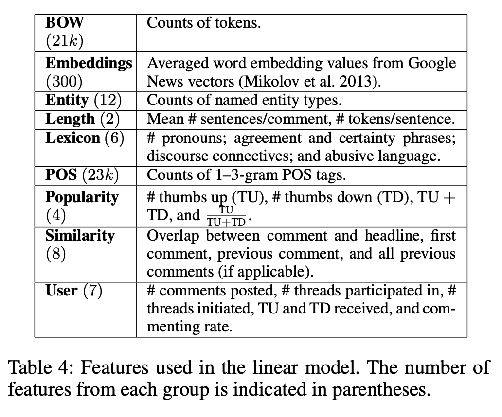
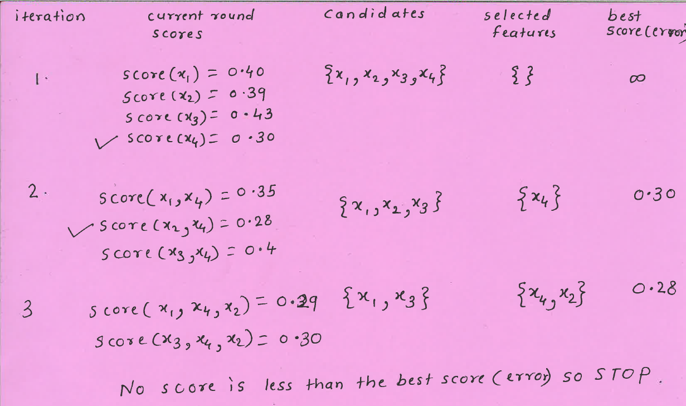

Lecture 13: Feature engineering and feature selection
Contents

Lecture 13: Feature engineering and feature selection#
UBC 2022-23
Instructor: Varada Kolhatkar
Imports#
import os
import sys
import matplotlib.pyplot as plt
import numpy as np
import numpy.random as npr
import pandas as pd
from sklearn.compose import (
ColumnTransformer,
TransformedTargetRegressor,
make_column_transformer,
)
from sklearn.dummy import DummyClassifier, DummyRegressor
from sklearn.ensemble import RandomForestRegressor
from sklearn.impute import SimpleImputer
from sklearn.linear_model import LinearRegression, LogisticRegression, Ridge, RidgeCV
from sklearn.metrics import make_scorer, mean_squared_error, r2_score
from sklearn.model_selection import cross_val_score, cross_validate, train_test_split
from sklearn.pipeline import Pipeline, make_pipeline
from sklearn.preprocessing import OneHotEncoder, OrdinalEncoder, StandardScaler
from sklearn.svm import SVC
from sklearn.tree import DecisionTreeRegressor
Learning outcomes#
From this lecture, students are expected to be able to:
Explain what feature engineering is and the importance of feature engineering in building machine learning models.
Carry out preliminary feature engineering on text data.
Explain the general concept of feature selection.
Discuss and compare different feature selection methods at a high level.
Use
sklearn’s implementation of recursive feature elimination (RFE) and forward and backward selection (SequentialFeatureSelector).
Feature engineering: Motivation#
What is feature engineering?#
Better features: more flexibility, higher score, we can get by with simple and more interpretable models.
If your features, i.e., representation is bad, whatever fancier model you build is not going to help.
Feature engineering is the process of transforming raw data into features that better represent the underlying problem to the predictive models, resulting in improved model accuracy on unseen data.
- Jason Brownlee
Some quotes on feature engineering#
A quote by Pedro Domingos A Few Useful Things to Know About Machine Learning
... At the end of the day, some machine learning projects succeed and some fail. What makes the difference? Easily the most important factor is the features used.
A quote by Andrew Ng, Machine Learning and AI via Brain simulations
Coming up with features is difficult, time-consuming, requires expert knowledge. "Applied machine learning" is basically feature engineering.
Better features usually help more than a better model.#
Good features would ideally:
capture most important aspects of the problem
allow learning with few examples
generalize to new scenarios.
There is a trade-off between simple and expressive features:
With simple features overfitting risk is low, but scores might be low.
With complicated features scores can be high, but so is overfitting risk.
The best features may be dependent on the model you use.#
Examples:
For counting-based methods like decision trees separate relevant groups of variable values
Discretization makes sense
For distance-based methods like KNN, we want different class labels to be “far”.
Standardization
For regression-based methods like linear regression, we want targets to have a linear dependency on features.
Domain-specific transformations#
In some domains there are natural transformations to do:
Spectrograms (sound data)
Wavelets (image data)
Convolutions

In this lecture, I’ll show you an example of feature engineering on text data.
Feature engineering for text data#
We will be using Covid tweets dataset for this.
df = pd.read_csv('data/Corona_NLP_test.csv')
df['Sentiment'].value_counts()
Negative 1041
Positive 947
Neutral 619
Extremely Positive 599
Extremely Negative 592
Name: Sentiment, dtype: int64
train_df, test_df = train_test_split(df, test_size=0.2, random_state=123)
train_df
| UserName | ScreenName | Location | TweetAt | OriginalTweet | Sentiment | |
|---|---|---|---|---|---|---|
| 1927 | 1928 | 46880 | Seattle, WA | 13-03-2020 | While I don't like all of Amazon's choices, to... | Positive |
| 1068 | 1069 | 46021 | NaN | 13-03-2020 | Me: shit buckets, its time to do the weekly s... | Negative |
| 803 | 804 | 45756 | The Outer Limits | 12-03-2020 | @SecPompeo @realDonaldTrump You mean the plan ... | Neutral |
| 2846 | 2847 | 47799 | Flagstaff, AZ | 15-03-2020 | @lauvagrande People who are sick arent panic ... | Extremely Negative |
| 3768 | 3769 | 48721 | Montreal, Canada | 16-03-2020 | Coronavirus Panic: Toilet Paper Is the People... | Negative |
| ... | ... | ... | ... | ... | ... | ... |
| 1122 | 1123 | 46075 | NaN | 13-03-2020 | Photos of our local grocery store shelveswher... | Extremely Positive |
| 1346 | 1347 | 46299 | Toronto | 13-03-2020 | Just went to the the grocery store (Highland F... | Positive |
| 3454 | 3455 | 48407 | Houston, TX | 16-03-2020 | Real talk though. Am I the only one spending h... | Neutral |
| 3437 | 3438 | 48390 | Washington, DC | 16-03-2020 | The supermarket business is booming! #COVID2019 | Neutral |
| 3582 | 3583 | 48535 | St James' Park, Newcastle | 16-03-2020 | Evening All Here s the story on the and the im... | Positive |
3038 rows × 6 columns
train_df.columns
Index(['UserName', 'ScreenName', 'Location', 'TweetAt', 'OriginalTweet',
'Sentiment'],
dtype='object')
train_df['Location'].value_counts()
United States 63
London, England 37
Los Angeles, CA 30
New York, NY 29
Washington, DC 29
..
Suburb of Chicago 1
philippines 1
Dont ask for freedom, take it. 1
Windsor Heights, IA 1
St James' Park, Newcastle 1
Name: Location, Length: 1441, dtype: int64
X_train, y_train = train_df[['OriginalTweet', 'Location']], train_df['Sentiment']
X_test, y_test = test_df[['OriginalTweet', 'Location']], test_df['Sentiment']
y_train.value_counts()
Negative 852
Positive 743
Neutral 501
Extremely Negative 472
Extremely Positive 470
Name: Sentiment, dtype: int64
scoring_metrics = 'accuracy'
results = {}
def mean_std_cross_val_scores(model, X_train, y_train, **kwargs):
"""
Returns mean and std of cross validation
Parameters
----------
model :
scikit-learn model
X_train : numpy array or pandas DataFrame
X in the training data
y_train :
y in the training data
Returns
----------
pandas Series with mean scores from cross_validation
"""
scores = cross_validate(model, X_train, y_train, **kwargs)
mean_scores = pd.DataFrame(scores).mean()
std_scores = pd.DataFrame(scores).std()
out_col = []
for i in range(len(mean_scores)):
out_col.append((f"%0.3f (+/- %0.3f)" % (mean_scores[i], std_scores[i])))
return pd.Series(data=out_col, index=mean_scores.index)
Dummy classifier#
dummy = DummyClassifier()
results["dummy"] = mean_std_cross_val_scores(
dummy, X_train, y_train, return_train_score=True, scoring=scoring_metrics
)
pd.DataFrame(results).T
| fit_time | score_time | test_score | train_score | |
|---|---|---|---|---|
| dummy | 0.001 (+/- 0.000) | 0.000 (+/- 0.000) | 0.280 (+/- 0.001) | 0.280 (+/- 0.000) |
Bag-of-words model#
from sklearn.feature_extraction.text import CountVectorizer
pipe = make_pipeline(CountVectorizer(stop_words='english'),
LogisticRegression(max_iter=1000))
results["logistic regression"] = mean_std_cross_val_scores(
pipe, X_train['OriginalTweet'], y_train, return_train_score=True, scoring=scoring_metrics
)
pd.DataFrame(results).T
| fit_time | score_time | test_score | train_score | |
|---|---|---|---|---|
| dummy | 0.001 (+/- 0.000) | 0.000 (+/- 0.000) | 0.280 (+/- 0.001) | 0.280 (+/- 0.000) |
| logistic regression | 0.429 (+/- 0.018) | 0.008 (+/- 0.000) | 0.413 (+/- 0.011) | 0.999 (+/- 0.000) |
Is it possible to further improve the scores?#
How about adding new features based on our intuitions? Let’s extract our own features that might be useful for this prediction task. In other words, let’s carry out feature engineering.
The code below adds some very basic length-related and sentiment features. We will be using a popular library called
nltkfor this exercise. If you have successfully created the coursecondaenvironment on your machine, you should already have this package in the environment.
How do we extract interesting information from text?
We use pre-trained models!
A couple of popular libraries which include such pre-trained models.
nltk
conda install -c anaconda nltk
spaCy
conda install -c conda-forge spacy
For emoji support:
pip install spacymoji
You also need to download the language model which contains all the pre-trained models. For that run the following in your course
condaenvironment or here.
import spacy
# !python -m spacy download en_core_web_md
import nltk
#nltk.download("punkt")
nltk.download("vader_lexicon")
nltk.download("punkt")
from nltk.sentiment.vader import SentimentIntensityAnalyzer
sid = SentimentIntensityAnalyzer()
[nltk_data] Downloading package vader_lexicon to
[nltk_data] /Users/kvarada/nltk_data...
[nltk_data] Package vader_lexicon is already up-to-date!
[nltk_data] Downloading package punkt to /Users/kvarada/nltk_data...
[nltk_data] Package punkt is already up-to-date!
s = "CPSC 330 students are smart, sweet, and funny."
print(sid.polarity_scores(s))
{'neg': 0.0, 'neu': 0.368, 'pos': 0.632, 'compound': 0.8225}
s = "CPSC 330 students are tired because of all the hard work they have been doing."
print(sid.polarity_scores(s))
{'neg': 0.249, 'neu': 0.751, 'pos': 0.0, 'compound': -0.5106}
spaCy#
A useful package for text processing and feature extraction
Active development: https://github.com/explosion/spaCy
Interactive lessons by Ines Montani: https://course.spacy.io/en/
Good documentation, easy to use, and customizable.
import en_core_web_md # pre-trained model
import spacy
nlp = en_core_web_md.load()
sample_text = """Dolly Parton is a gift to us all.
From writing all-time great songs like “Jolene” and “I Will Always Love You”,
to great performances in films like 9 to 5, to helping fund a COVID-19 vaccine,
she’s given us so much. Now, Netflix bring us Dolly Parton’s Christmas on the Square,
an original musical that stars Christine Baranski as a Scrooge-like landowner
who threatens to evict an entire town on Christmas Eve to make room for a new mall.
Directed and choreographed by the legendary Debbie Allen and counting Jennifer Lewis
and Parton herself amongst its cast, Christmas on the Square seems like the perfect movie
to save Christmas 2020. 😻 👍🏿"""
# [Adapted from here.](https://thepopbreak.com/2020/11/22/dolly-partons-christmas-on-the-square-review-not-quite-a-christmas-miracle/)
Spacy extracts all interesting information from text with this call.
doc = nlp(sample_text)
Let’s look at part-of-speech tags.
print([(token, token.pos_) for token in doc][:20])
[(Dolly, 'PROPN'), (Parton, 'PROPN'), (is, 'AUX'), (a, 'DET'), (gift, 'NOUN'), (to, 'ADP'), (us, 'PRON'), (all, 'PRON'), (., 'PUNCT'), (
, 'SPACE'), (From, 'ADP'), (writing, 'VERB'), (all, 'DET'), (-, 'PUNCT'), (time, 'NOUN'), (great, 'ADJ'), (songs, 'NOUN'), (like, 'ADP'), (“, 'PUNCT'), (Jolene, 'PROPN')]
Often we want to know who did what to whom.
Named entities give you this information.
What are named entities in the text?
print("Named entities:\n", [(ent.text, ent.label_) for ent in doc.ents])
print("\nORG means: ", spacy.explain("ORG"))
print("\nPERSON means: ", spacy.explain("PERSON"))
print("\nDATE means: ", spacy.explain("DATE"))
Named entities:
[('Dolly Parton', 'PERSON'), ('Jolene', 'WORK_OF_ART'), ('I Will Always Love You', 'WORK_OF_ART'), ('9', 'CARDINAL'), ('Netflix', 'ORG'), ('Dolly Parton’s', 'PERSON'), ('Christmas', 'DATE'), ('Square', 'FAC'), ('Christine Baranski', 'PERSON'), ('Christmas Eve', 'DATE'), ('Debbie Allen', 'PERSON'), ('Jennifer Lewis', 'PERSON'), ('Parton', 'PERSON'), ('Christmas', 'DATE'), ('Square', 'FAC'), ('Christmas 2020', 'DATE'), ('😻', 'GPE')]
ORG means: Companies, agencies, institutions, etc.
PERSON means: People, including fictional
DATE means: Absolute or relative dates or periods
from spacy import displacy
displacy.render(doc, style="ent")
An example from a project#
Goal: Extract and visualize inter-corporate relationships from disclosed annual 10-K reports of public companies.
text = (
"Heavy hitters, including Microsoft and Google, "
"are competing for customers in cloud services with the likes of IBM and Salesforce."
)
doc = nlp(text)
displacy.render(doc, style="ent")
print("Named entities:\n", [(ent.text, ent.label_) for ent in doc.ents])
Named entities:
[('Microsoft', 'ORG'), ('Google', 'ORG'), ('IBM', 'ORG'), ('Salesforce', 'PRODUCT')]
If you want emoji identification support install spacymoji in the course environment.
pip install spacymoji
After installing spacymoji, if it’s still complaining about module not found, my guess is that you do not have pip installed in your conda environment. Go to your course conda environment install pip and install the spacymoji package in the environment using the pip you just installed in the current environment.
conda install pip
YOUR_MINICONDA_PATH/miniconda3/envs/cpsc330/bin/pip install spacymoji
from spacymoji import Emoji
nlp.add_pipe("emoji", first=True);
Does the text have any emojis? If yes, extract the description.
doc = nlp(sample_text)
doc._.emoji
[('😻', 138, 'smiling cat face with heart-eyes'),
('👍🏿', 139, 'thumbs up dark skin tone')]
Simple feature engineering for our problem.#
import en_core_web_md
import spacy
nlp = en_core_web_md.load()
from spacymoji import Emoji
nlp.add_pipe("emoji", first=True)
def get_relative_length(text, TWITTER_ALLOWED_CHARS=280.0):
"""
Returns the relative length of text.
Parameters:
------
text: (str)
the input text
Keyword arguments:
------
TWITTER_ALLOWED_CHARS: (float)
the denominator for finding relative length
Returns:
-------
relative length of text: (float)
"""
return len(text) / TWITTER_ALLOWED_CHARS
def get_length_in_words(text):
"""
Returns the length of the text in words.
Parameters:
------
text: (str)
the input text
Returns:
-------
length of tokenized text: (int)
"""
return len(nltk.word_tokenize(text))
def get_sentiment(text):
"""
Returns the compound score representing the sentiment: -1 (most extreme negative) and +1 (most extreme positive)
The compound score is a normalized score calculated by summing the valence scores of each word in the lexicon.
Parameters:
------
text: (str)
the input text
Returns:
-------
sentiment of the text: (str)
"""
scores = sid.polarity_scores(text)
return scores["compound"]
def get_avg_word_length(text):
"""
Returns the average word length of the given text.
Parameters:
text -- (str)
"""
words = text.split()
return sum(len(word) for word in words) / len(words)
def has_emoji(text):
"""
Returns the average word length of the given text.
Parameters:
text -- (str)
"""
doc = nlp(text)
return 1 if doc._.has_emoji else 0
train_df = train_df.assign(n_words=train_df["OriginalTweet"].apply(get_length_in_words))
train_df = train_df.assign(vader_sentiment=train_df["OriginalTweet"].apply(get_sentiment))
train_df = train_df.assign(rel_char_len=train_df["OriginalTweet"].apply(get_relative_length))
test_df = test_df.assign(n_words=test_df["OriginalTweet"].apply(get_length_in_words))
test_df = test_df.assign(vader_sentiment=test_df["OriginalTweet"].apply(get_sentiment))
test_df = test_df.assign(rel_char_len=test_df["OriginalTweet"].apply(get_relative_length))
train_df = train_df.assign(
average_word_length=train_df["OriginalTweet"].apply(get_avg_word_length)
)
test_df = test_df.assign(average_word_length=test_df["OriginalTweet"].apply(get_avg_word_length))
# whether all letters are uppercase or not (all_caps)
train_df = train_df.assign(
all_caps=train_df["OriginalTweet"].apply(lambda x: 1 if x.isupper() else 0)
)
test_df = test_df.assign(
all_caps=test_df["OriginalTweet"].apply(lambda x: 1 if x.isupper() else 0)
)
train_df = train_df.assign(has_emoji=train_df["OriginalTweet"].apply(has_emoji))
test_df = test_df.assign(has_emoji=test_df["OriginalTweet"].apply(has_emoji))
train_df.head()
| UserName | ScreenName | Location | TweetAt | OriginalTweet | Sentiment | n_words | vader_sentiment | rel_char_len | average_word_length | all_caps | has_emoji | |
|---|---|---|---|---|---|---|---|---|---|---|---|---|
| 1927 | 1928 | 46880 | Seattle, WA | 13-03-2020 | While I don't like all of Amazon's choices, to... | Positive | 31 | -0.1053 | 0.589286 | 5.640000 | 0 | 0 |
| 1068 | 1069 | 46021 | NaN | 13-03-2020 | Me: shit buckets, its time to do the weekly s... | Negative | 52 | -0.2500 | 0.932143 | 4.636364 | 0 | 0 |
| 803 | 804 | 45756 | The Outer Limits | 12-03-2020 | @SecPompeo @realDonaldTrump You mean the plan ... | Neutral | 44 | 0.0000 | 0.910714 | 6.741935 | 0 | 0 |
| 2846 | 2847 | 47799 | Flagstaff, AZ | 15-03-2020 | @lauvagrande People who are sick arent panic ... | Extremely Negative | 46 | -0.8481 | 0.907143 | 5.023810 | 0 | 0 |
| 3768 | 3769 | 48721 | Montreal, Canada | 16-03-2020 | Coronavirus Panic: Toilet Paper Is the People... | Negative | 21 | -0.5106 | 0.500000 | 9.846154 | 0 | 0 |
train_df.shape
(3038, 12)
(train_df['all_caps'] == 1).sum()
0
X_train = train_df.drop(columns=['Sentiment'])
numeric_features = ['vader_sentiment',
'rel_char_len',
'average_word_length']
passthrough_features = ['all_caps', 'has_emoji']
text_feature = 'OriginalTweet'
drop_features = ['UserName', 'ScreenName', 'Location', 'TweetAt']
preprocessor = make_column_transformer(
(StandardScaler(), numeric_features),
("passthrough", passthrough_features),
(CountVectorizer(stop_words='english'), text_feature),
("drop", drop_features)
)
pipe = make_pipeline(preprocessor, LogisticRegression(max_iter=1000))
results["LR (more feats)"] = mean_std_cross_val_scores(
pipe, X_train, y_train, return_train_score=True, scoring=scoring_metrics
)
pd.DataFrame(results).T
| fit_time | score_time | test_score | train_score | |
|---|---|---|---|---|
| dummy | 0.001 (+/- 0.000) | 0.000 (+/- 0.000) | 0.280 (+/- 0.001) | 0.280 (+/- 0.000) |
| logistic regression | 0.429 (+/- 0.018) | 0.008 (+/- 0.000) | 0.413 (+/- 0.011) | 0.999 (+/- 0.000) |
| LR (more feats) | 0.458 (+/- 0.024) | 0.009 (+/- 0.000) | 0.689 (+/- 0.007) | 0.998 (+/- 0.001) |
pipe.fit(X_train, y_train)
Pipeline(steps=[('columntransformer',
ColumnTransformer(transformers=[('standardscaler',
StandardScaler(),
['vader_sentiment',
'rel_char_len',
'average_word_length']),
('passthrough', 'passthrough',
['all_caps', 'has_emoji']),
('countvectorizer',
CountVectorizer(stop_words='english'),
'OriginalTweet'),
('drop', 'drop',
['UserName', 'ScreenName',
'Location', 'TweetAt'])])),
('logisticregression', LogisticRegression(max_iter=1000))])In a Jupyter environment, please rerun this cell to show the HTML representation or trust the notebook. On GitHub, the HTML representation is unable to render, please try loading this page with nbviewer.org.
Pipeline(steps=[('columntransformer',
ColumnTransformer(transformers=[('standardscaler',
StandardScaler(),
['vader_sentiment',
'rel_char_len',
'average_word_length']),
('passthrough', 'passthrough',
['all_caps', 'has_emoji']),
('countvectorizer',
CountVectorizer(stop_words='english'),
'OriginalTweet'),
('drop', 'drop',
['UserName', 'ScreenName',
'Location', 'TweetAt'])])),
('logisticregression', LogisticRegression(max_iter=1000))])ColumnTransformer(transformers=[('standardscaler', StandardScaler(),
['vader_sentiment', 'rel_char_len',
'average_word_length']),
('passthrough', 'passthrough',
['all_caps', 'has_emoji']),
('countvectorizer',
CountVectorizer(stop_words='english'),
'OriginalTweet'),
('drop', 'drop',
['UserName', 'ScreenName', 'Location',
'TweetAt'])])['vader_sentiment', 'rel_char_len', 'average_word_length']
StandardScaler()
['all_caps', 'has_emoji']
passthrough
OriginalTweet
CountVectorizer(stop_words='english')
['UserName', 'ScreenName', 'Location', 'TweetAt']
drop
LogisticRegression(max_iter=1000)
cv_feats = pipe.named_steps['columntransformer'].named_transformers_['countvectorizer'].get_feature_names()
/Users/kvarada/opt/miniconda3/envs/cpsc330/lib/python3.10/site-packages/sklearn/utils/deprecation.py:87: FutureWarning: Function get_feature_names is deprecated; get_feature_names is deprecated in 1.0 and will be removed in 1.2. Please use get_feature_names_out instead.
warnings.warn(msg, category=FutureWarning)
feat_names = numeric_features + passthrough_features + cv_feats
coefs = pipe.named_steps['logisticregression'].coef_[0]
df = pd.DataFrame(
data={
"features": feat_names,
"coefficients": coefs,
}
)
df.sort_values('coefficients')
| features | coefficients | |
|---|---|---|
| 0 | vader_sentiment | -6.141919 |
| 11331 | won | -1.369740 |
| 2551 | coronapocalypse | -0.809931 |
| 2214 | closed | -0.744717 |
| 8661 | retail | -0.723808 |
| ... | ... | ... |
| 9862 | stupid | 1.157669 |
| 3299 | don | 1.159067 |
| 4879 | hell | 1.311957 |
| 3129 | die | 1.366538 |
| 7504 | panic | 1.527156 |
11664 rows × 2 columns
We get some improvements with our engineered features!
Common features used in text classification#
Bag of words#
So far for text data we have been using bag of word features.
They are good enough for many tasks. But …
This encoding throws out a lot of things we know about language
It assumes that word order is not that important.
So if you want to improve the scores further on text classification tasks you carry out feature engineering.
Let’s look at some examples from research papers.
Example: Label “Personalized” Important E-mails:#
Features: bag of words, trigrams, regular expressions, and so on.
There might be some “globally” important messages:
“This is your mother, something terrible happened, give me a call ASAP.”
But your “important” message may be unimportant to others.
Similar for spam: “spam” for one user could be “not spam” for another.
Social features (e.g., percentage of sender emails that is read by the recipient)
Content features (e.g., recent terms the user has been using in emails)
Thread features (e.g., whether the user has started the thread)
…
The Learning Behind Gmail Priority Inbox#

Feature engineering examples: Automatically Identifying Good Conversations Online#

(Optional) Term weighing (TF-IDF)#
A measure of relatedness between words and documents
Intuition: Meaningful words may occur repeatedly in related documents, but functional words (e.g., make, the) may be distributed evenly over all documents
where,
\(tf_{ij}\) → number of occurrences of the term \(w_i\) in document \(d_j\)
\(D\) → number of documents
\(df_i\) → number of documents in which \(w_i\) occurs
Check TfidfVectorizer from sklearn.
N-grams#
Incorporating more context
A contiguous sequence of n items (characters, tokens) in text.
CPSC330 students are hard-working .
2-grams (bigrams): a contiguous sequence of two words
CPSC330 students, students are, are hard-working, hard-working .
3-grams (trigrams): a contiguous sequence of three words
CPSC330 students are, students are hard-working, are hard-working .
You can extract ngram features using CountVectorizer by passing ngram_range.
from sklearn.feature_extraction.text import CountVectorizer
X = [
"URGENT!! As a valued network customer you have been selected to receive a $900 prize reward!",
"Lol you are always so convincing.",
"URGENT!! Call right away!!",
]
vec = CountVectorizer(ngram_range=(1, 3))
X_counts = vec.fit_transform(X)
bow_df = pd.DataFrame(X_counts.toarray(), columns=vec.get_feature_names(), index=X)
/Users/kvarada/opt/miniconda3/envs/cpsc330/lib/python3.10/site-packages/sklearn/utils/deprecation.py:87: FutureWarning: Function get_feature_names is deprecated; get_feature_names is deprecated in 1.0 and will be removed in 1.2. Please use get_feature_names_out instead.
warnings.warn(msg, category=FutureWarning)
bow_df
| 900 | 900 prize | 900 prize reward | always | always so | always so convincing | are | are always | are always so | as | ... | urgent call | urgent call right | valued | valued network | valued network customer | you | you are | you are always | you have | you have been | |
|---|---|---|---|---|---|---|---|---|---|---|---|---|---|---|---|---|---|---|---|---|---|
| URGENT!! As a valued network customer you have been selected to receive a $900 prize reward! | 1 | 1 | 1 | 0 | 0 | 0 | 0 | 0 | 0 | 1 | ... | 0 | 0 | 1 | 1 | 1 | 1 | 0 | 0 | 1 | 1 |
| Lol you are always so convincing. | 0 | 0 | 0 | 1 | 1 | 1 | 1 | 1 | 1 | 0 | ... | 0 | 0 | 0 | 0 | 0 | 1 | 1 | 1 | 0 | 0 |
| URGENT!! Call right away!! | 0 | 0 | 0 | 0 | 0 | 0 | 0 | 0 | 0 | 0 | ... | 1 | 1 | 0 | 0 | 0 | 0 | 0 | 0 | 0 | 0 |
3 rows × 61 columns
ASIDE: Google n-gram viewer#
All Our N-gram are Belong to You
https://ai.googleblog.com/2006/08/all-our-n-gram-are-belong-toyou.html
Here at Google Research we have been using word n-gram models for a variety of R&D projects, such as statistical machine translation, speech recognition, spelling correction, entity detection, information extraction, and others. That's why we decided to share this enormous dataset with everyone. We processed 1,024,908,267,229 words of running text and are publishing the counts for all 1,176,470,663 five-word sequences that appear at least 40 times. There are 13,588,391 unique words, after discarding words that appear less than 200 times.”
from IPython.display import HTML
url = "https://books.google.com/ngrams/"
HTML("<iframe src=%s width=1000 height=800></iframe>" % url)
/Users/kvarada/opt/miniconda3/envs/cpsc330/lib/python3.10/site-packages/IPython/core/display.py:419: UserWarning: Consider using IPython.display.IFrame instead
warnings.warn("Consider using IPython.display.IFrame instead")
Aside: Google n-gram viewer#
Count the occurrences of the bigram smart women in the corpus from 1800 to 2000

Aside: Google n-gram viewer#
Trends in the word challenge used as a noun vs. verb

Part-of-speech features#
Part-of-speech (POS) in English#
Part-of-speech: A kind of syntactic category that tells you some of the grammatical properties of a word.
Noun → water, sun, cat
Verb → run, eat, teach
The ____ was running.
Only a noun fits here.
Part-of-speech (POS) features#
POS features use POS information for the words in text.
CPSC330/PROPER_NOUN students/NOUN are/VERB hard-working/ADJECTIVE
An example from a project#
Data: a bunch of documents
Task: identify texts with permissions and identify who is giving permission to whom.
You may disclose Google confidential information when compelled to do so by law if you provide us reasonable prior notice, unless a court orders that we not receive notice.
A very simple solution
Look for pronouns and verbs.
Add POS tags as features in your model.
Maybe look up words similar to disclose.
Interim summary#
Feature engineering is finding the useful representation of the data that can help us effectively solve our problem.
In the context of text data, if we want to go beyond bag-of-words and incorporate human knowledge in models, we carry out feature engineering.
Some common features include:
ngram features
part-of-speech features
named entity features
emoticons in text
These are usually extracted from pre-trained models using libraries such as
spaCy.Now a lot of this has moved to deep learning.
But many industries still rely on manual feature engineering.
Feature engineering#
The best features are application-dependent.
It’s hard to give general advice. But here are some guidelines.
Ask the domain experts.
Go through academic papers in the discipline.
Often have idea of right discretization/standardization/transformation.
If no domain expert, cross-validation will help.
If you have lots of data, use deep learning methods.
The algorithms we used are very standard for Kagglers ... We spent most of our efforts in feature engineering...
- Xavier Conort, on winning the Flight Quest challenge on Kaggle
Break (5 min)#

Feature selection: Introduction and motivation#
With so many ways to add new features, we can increase dimensionality of the data.
More features means more complex models, which means increasing the chance of overfitting.
What is feature selection?#
Find the features (columns) \(X\) that are important for predicting \(y\), and remove the features that aren’t.
Given \(X = \begin{bmatrix}x_1 & x_2 & \dots & x_n\\ \\ \\ \end{bmatrix}\) and \(y = \begin{bmatrix}\\ \\ \\ \end{bmatrix}\), find the columns \(1 \leq j \leq n\) in \(X\) that are important for predicting \(y\).
Why feature selection?#
Interpretability: Models are more interpretable with fewer features. If you get the same performance with 10 features instead of 500 features, why not use the model with smaller number of features?
Computation: Models fit/predict faster with fewer columns.
Data collection: What type of new data should I collect? It may be cheaper to collect fewer columns.
Fundamental tradeoff: Can I reduce overfitting by removing useless features?
Feature selection can often result in better performing (less overfit), easier to understand, and faster model.
How do we carry out feature selection?#
There are a number of ways.
You could use domain knowledge to discard features.
We are briefly going to look at two automatic feature selection methods from
sklearn:Model-based selection
Recursive feature elimination
Forward/backward selection
Very related to looking at feature importances.
from sklearn.datasets import load_breast_cancer
cancer = load_breast_cancer()
X_train, X_test, y_train, y_test = train_test_split(
cancer.data, cancer.target, random_state=0, test_size=0.5
)
X_train.shape
(284, 30)
pipe_lr_all_feats = make_pipeline(StandardScaler(), LogisticRegression(max_iter=1000))
pipe_lr_all_feats.fit(X_train, y_train)
pd.DataFrame(
cross_validate(pipe_lr_all_feats, X_train, y_train, return_train_score=True)
).mean()
fit_time 0.001463
score_time 0.000120
test_score 0.968233
train_score 0.987681
dtype: float64
Model-based selection#
Use a supervised machine learning model to judge the importance of each feature.
Keep only the most important once.
Supervised machine learning model used for feature selection can be different that the one used as the final estimator.
Use a model which has some way to calculate feature importances.
To use model-based selection, we use
SelectFromModeltransformer.It selects features which have the feature importances greater than the provided threshold.
Below I’m using
RandomForestClassifierfor feature selection with threahold “median” of feature importances.Approximately how many features will be selected?
from sklearn.ensemble import RandomForestClassifier
from sklearn.feature_selection import SelectFromModel
select_rf = SelectFromModel(
RandomForestClassifier(n_estimators=100, random_state=42),
threshold="median"
)
We can put the feature selection transformer in a pipeline.
pipe_lr_model_based = make_pipeline(
StandardScaler(), select_rf, LogisticRegression(max_iter=1000)
)
pd.DataFrame(
cross_validate(pipe_lr_model_based, X_train, y_train, return_train_score=True)
).mean()
fit_time 0.055977
score_time 0.004577
test_score 0.950564
train_score 0.974480
dtype: float64
pipe_lr_model_based = make_pipeline(
StandardScaler(), select_rf, LogisticRegression(max_iter=1000)
)
pd.DataFrame(
cross_validate(pipe_lr_model_based, X_train, y_train, return_train_score=True)
).mean()
fit_time 0.053640
score_time 0.004332
test_score 0.950564
train_score 0.974480
dtype: float64
pipe_lr_model_based.fit(X_train, y_train)
pipe_lr_model_based.named_steps["selectfrommodel"].transform(X_train).shape
(284, 15)
Similar results with only 15 features instead of 30 features.
Recursive feature elimination (RFE)#
Build a series of models
At each iteration, discard the least important feature according to the model.
Computationally expensive
Basic idea
fit model
find least important feature
remove
iterate.
RFE algorithm#
Decide \(k\), the number of features to select.
Assign importances to features, e.g. by fitting a model and looking at
coef_orfeature_importances_.Remove the least important feature.
Repeat steps 2-3 until only \(k\) features are remaining.
Note that this is not the same as just removing all the less important features in one shot!
scaler = StandardScaler()
X_train_scaled = scaler.fit_transform(X_train)
from sklearn.feature_selection import RFE
# create ranking of features
rfe = RFE(LogisticRegression(), n_features_to_select=5)
rfe.fit(X_train_scaled, y_train)
rfe.ranking_
array([16, 12, 19, 13, 23, 20, 10, 1, 9, 22, 2, 25, 5, 7, 15, 4, 26,
18, 21, 8, 1, 1, 1, 6, 14, 24, 3, 1, 17, 11])
print(rfe.support_)
[False False False False False False False True False False False False
False False False False False False False False True True True False
False False False True False False]
print("selected features: ", cancer.feature_names[rfe.support_])
selected features: ['mean concave points' 'worst radius' 'worst texture' 'worst perimeter'
'worst concave points']
How do we know what value to pass to
n_features_to_select?
Use
RFECVwhich uses cross-validation to select number of features.
from sklearn.feature_selection import RFECV
rfe_cv = RFECV(LogisticRegression(max_iter=2000), cv=10)
rfe_cv.fit(X_train_scaled, y_train)
print(rfe_cv.support_)
print(cancer.feature_names[rfe_cv.support_])
[False True False True False False True True True False True False
True True False True False False False True True True True True
False False True True False True]
['mean texture' 'mean area' 'mean concavity' 'mean concave points'
'mean symmetry' 'radius error' 'perimeter error' 'area error'
'compactness error' 'fractal dimension error' 'worst radius'
'worst texture' 'worst perimeter' 'worst area' 'worst concavity'
'worst concave points' 'worst fractal dimension']
rfe_pipe = make_pipeline(
StandardScaler(),
RFECV(LogisticRegression(max_iter=2000), cv=10),
RandomForestClassifier(n_estimators=100, random_state=42),
)
pd.DataFrame(cross_validate(rfe_pipe, X_train, y_train, return_train_score=True)).mean()
fit_time 0.360329
score_time 0.002597
test_score 0.943609
train_score 1.000000
dtype: float64
Slow because there is cross validation within cross validation
Not a big improvement in scores compared to all features on this toy case
Search and score#
Define a scoring function \(f(S)\) that measures the quality of the set of features \(S\).
Now search for the set of features \(S\) with the best score.
General idea of search and score methods#
Example: Suppose you have three features: \(A, B, C\)
Compute score for \(S = \{\}\)
Compute score for \(S = \{A\}\)
Compute score for \(S= \{B\}\)
Compute score for \(S = \{C\}\)
Compute score for \(S = \{A,B\}\)
Compute score for \(S = \{A,C\}\)
Compute score for \(S = \{B,C\}\)
Compute score for \(S = \{A,B,C\}\)
Return \(S\) with the best score.
How many distinct combinations we have to try out?
Forward or backward selection#
Also called wrapper methods
Shrink or grow feature set by removing or adding one feature at a time
Makes the decision based on whether adding/removing the feature improves the CV score or not

from sklearn.feature_selection import SequentialFeatureSelector
pipe_forward = make_pipeline(
StandardScaler(),
SequentialFeatureSelector(LogisticRegression(max_iter=1000),
direction="forward",
n_features_to_select='auto',
tol=None),
RandomForestClassifier(n_estimators=100, random_state=42),
)
pd.DataFrame(
cross_validate(pipe_forward, X_train, y_train, return_train_score=True)
).mean()
fit_time 1.577675
score_time 0.002616
test_score 0.933020
train_score 1.000000
dtype: float64
pipe_forward = make_pipeline(
StandardScaler(),
SequentialFeatureSelector(
LogisticRegression(max_iter=1000),
direction="backward",
n_features_to_select=15),
RandomForestClassifier(n_estimators=100, random_state=42),
)
pd.DataFrame(
cross_validate(pipe_forward, X_train, y_train, return_train_score=True)
).mean()
fit_time 2.028239
score_time 0.002643
test_score 0.950627
train_score 1.000000
dtype: float64
Other ways to search#
Stochastic local search
Inject randomness so that we can explore new parts of the search space
Simulated annealing
Genetic algorithms
Warnings about feature selection#
A feature’s relevance is only defined in the context of other features.
Adding/removing features can make features relevant/irrelevant.
If features can be predicted from other features, you cannot know which one to pick.
Relevance for features does not have a causal relationship.
Don’t be overconfident.
The methods we have seen probably do not discover the ground truth and how the world really works.
They simply tell you which features help in predicting \(y_i\) for the data you have.
(iClicker) Exercise 13.1#
iClicker cloud join link: https://join.iclicker.com/3DP5H
Select all of the following statements which are TRUE.
(A) Simple association-based feature selection approaches do not take into account the interaction between features.
(B) You can carry out feature selection using linear models by pruning the features which have very small weights (i.e., coefficients less than a threshold).
(C) Forward search is guaranteed to find the best feature set.
(D) The order of features removed given by
rfe.ranking_is the same as the order of original feature importances given by the model.
(Optional) Problems with feature selection#
The term ‘relevance’ is not clearly defined.
What all things can go wrong with feature selection?
Attribution: From CPSC 340.
Example: Is “Relevance” clearly defined?#
Consider a supervised classification task of predicting whether someone has particular genetic variation (SNP)
{kind=link}
True model: You almost have the same value as your biological mom.
Is “Relevance” clearly defined?#
True model: You almost have the same value for SNP as your biological mom.
(SNP = biological mom) with very high probability
(SNP != biological mom) with very low probability
{kind=link}
Is “Relevance” clearly defined?#
What if “mom” feature is repeated?
Should we pick both? Should we pick one of them because it predicts the other?
Dependence, collinearity for linear models
If a feature can be predicted from the other, don’t know which one to pick.
{kind=link}
Is “Relevance” clearly defined?#
What if we add (maternal) “grandma” feature?
Is it relevant?
We can predict SNP accurately using this feature
Conditional independence
But grandma is irrelevant given biological mom feature
Relevant features may become irrelevant given other features

Is “Relevance” clearly defined?#
What if we do not know biological mom feature and we just have grandma feature
It becomes relevant now.
Without mom feature this is the best we can do.
General problem (“taco Tuesday” problem)
Features can become relevant due to missing information
{kind=link}
Is “Relevance” clearly defined?#
Are there any relevant features now?
They may have some common maternal ancestor.
What if mom likes dad because they share SNP?
General problem (Confounding)
Hidden features can make irrelevant features relevant.

Is “Relevance” clearly defined?#
Now what if we have “sibling” feature?
The feature is relevant in predicting SNP but not the cause of SNP.
General problem (non causality)
the relevant feature may not be causal

Is “Relevance” clearly defined?#
What if you are given “baby” feature?
Now the sex feature becomes relevant.
“baby” feature is relevant when sex == F
General problem (context specific relevance)
adding a feature can make an irrelevant feature relevant
{kind=link}
Warnings about feature selection#
A feature is only relevant in the context of other features.
Adding/removing features can make features relevant/irrelevant.
Confounding factors can make irrelevant features the most relevant.
If features can be predicted from other other features, you cannot know which one to pick.
Relevance for features does not have a causal relationship.
Is feature selection completely hopeless?
It is messy but we still need to do it. So we try to do our best!
General advice on finding relevant features#
Try forward selection.
Try other feature selection methods (e.g.,
RFE, simulated annealing, genetic algorithms)Talk to domain experts; they probably have an idea why certain features are relevant.
Don’t be overconfident.
The methods we have seen probably do not discover the ground truth and how the world really works.
They simply tell you which features help in predicting \(y_i\).